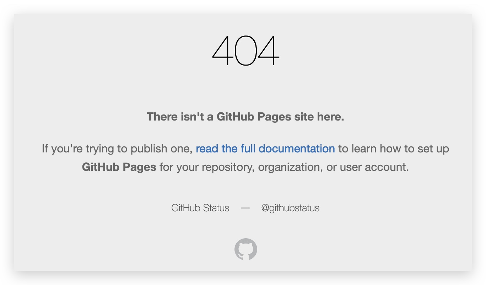

如何将已备案域名指向github.io，以及github的自定义域名丢失问题
本文最后更新于：29 分钟前
github.io对于码农来说是一大福利，免去了租用博客空间的花费，但默认域名是 github账号名.github.io, 如果想要个性化的域名，就需要在github相应项目的设定中设置好自己的个性域名，看似简单，但这个设置其实也是有不少坑的。
设置github.io个性域名有哪些坑
- github建议将个性域名的cname指向github.io，但是，如果你的域名备案了，并且你希望设置的个性域名是www域名或者根域名，就不应该这么设置，否则会判定你主机备案失效，导致你的备案被撤销
- 根据上述原因，尽量不要将www域名或者根域名指向github.io，如果的确想这么做，就在你备案主机上安装nginx，并增加指向github.io的反向代理，这样看起来就合规了
- 当你执行
hexo deploy后，如果发现访问个性域名得到了404错误的话，就需要在hexo/source目录下新建CNAME文件，并将个性化域名作为该文件的内容，这样再deploy就不会发生404问题了

本博客所有文章除特别声明外，均采用 CC BY-SA 4.0 协议 ，转载请注明出处！